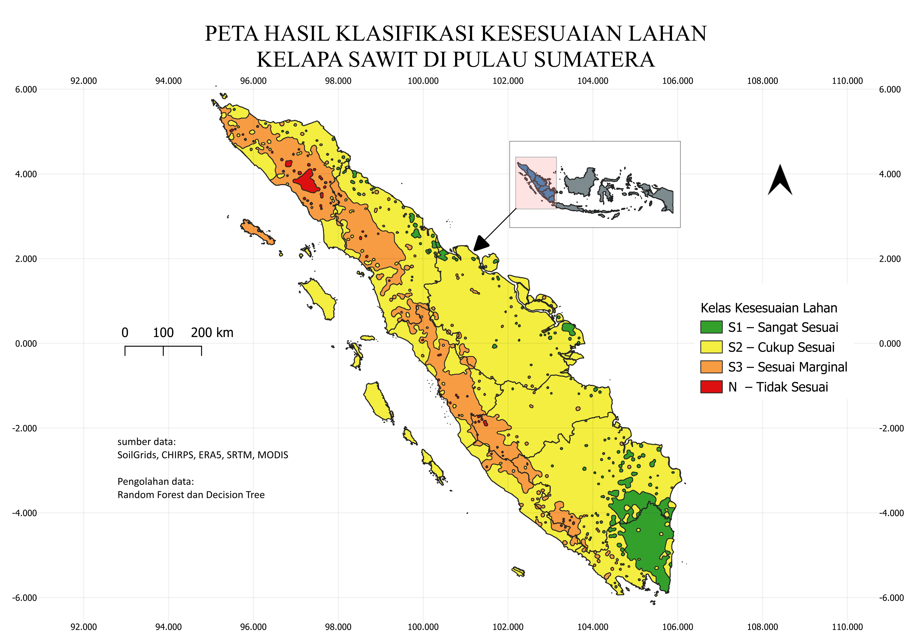
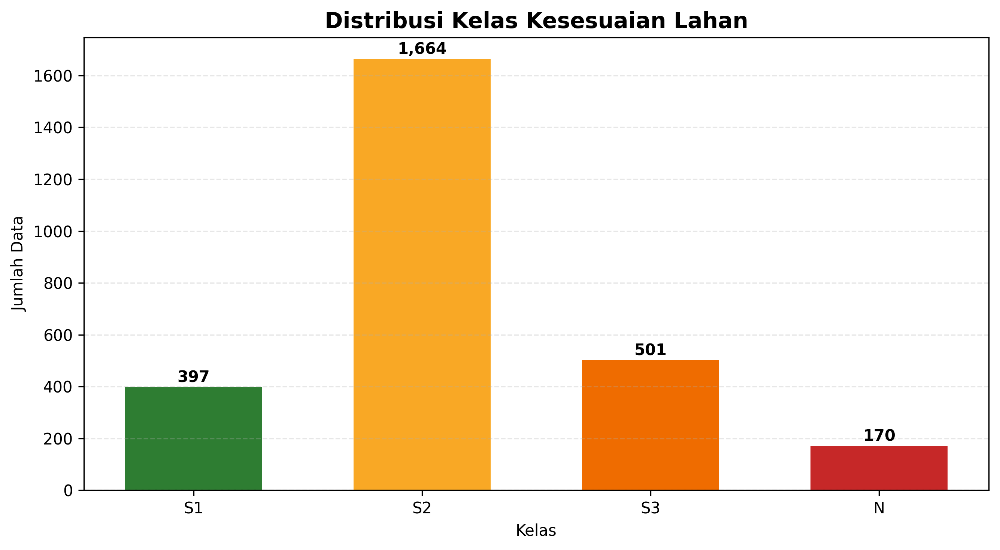
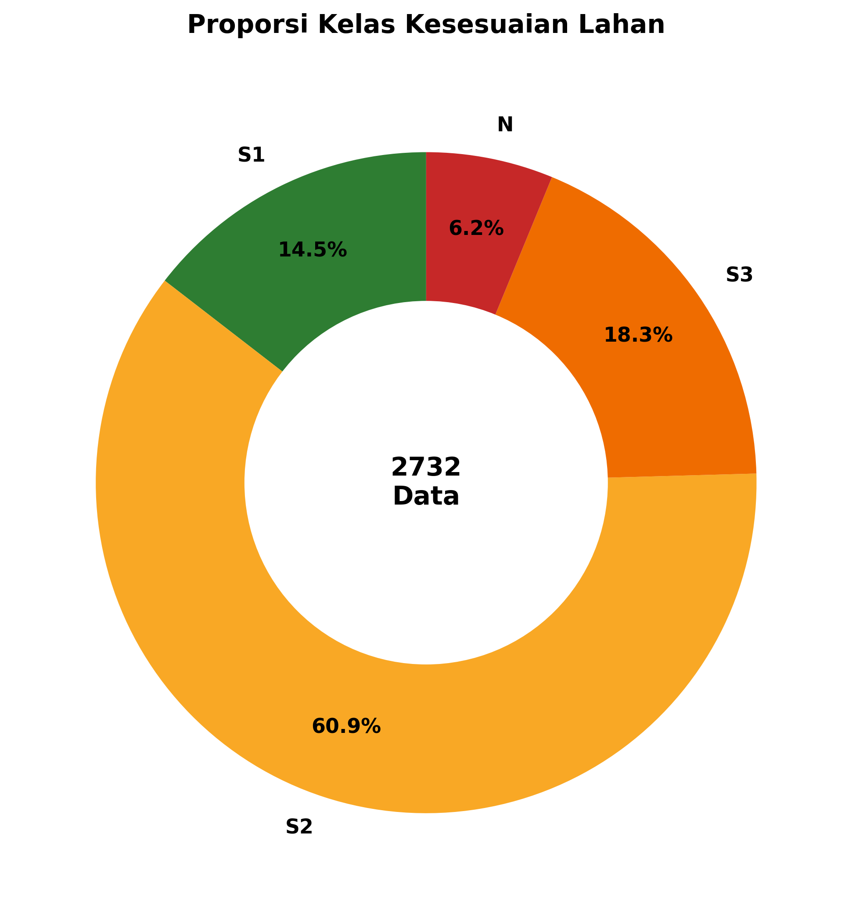

Dashboard Utama
Ringkasan distribusi kesesuaian lahan kelapa sawit di Pulau Sumatra
S1 – Sangat Sesuai
14.53%
≈ 397 data klasifikasi
S2 – Cukup Sesuai
60.91%
≈ 1664 data klasifikasi
S3 – Sesuai Marginal
18.34%
≈ 501 data klasifikasi
N – Tidak Sesuai
6.22%
≈ 170 data klasifikasi
Peta Kesesuaian Lahan – Sumatra
Overview

Distribusi Kelas

Proporsi Kelas

Variabel Biofisik
🌡️ Suhu Rata-rata
24–28 °C
🌧️ Curah Hujan
1700–3000 mm
📐 Kemiringan Lereng
<8%
🧪 pH Tanah
5.0–6.5
🪨 Tekstur Tanah
Halus-Sedang
📏 Kedalaman Tanah
>100 cm
🌿 Tutupan Lahan
MODIS 30m
Evaluasi Performa Model
Performa algoritma Decision Tree dan Random Forest dalam mempelajari label kesesuaian lahan hasil klasifikasi rule-based FAO dan BBSDLP.
Decision Tree
88.30%
Random Forest
97.99%
F1-Score (DT)
89.00%
F1-Score (RF)
97.98%
Feature Importance
Tingkat kontribusi masing-masing variabel biofisik terhadap prediksi kesesuaian lahan menggunakan algoritma Random Forest.